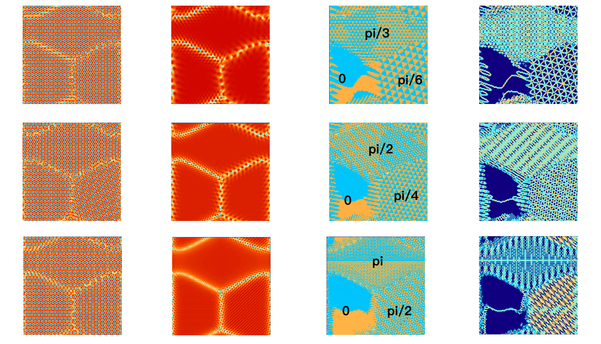
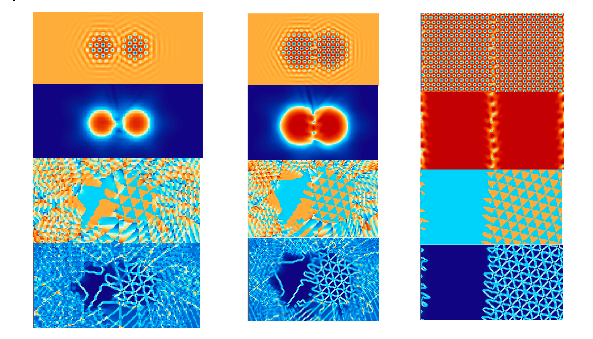

Three complex amplitudes reconstruct density; hats denote their Fourier representation.
q is the Fourier wavevector; {j, k, ℓ} = {1, 2, 3} in the conjugate interaction. These are the operators used in my solver.
I initialized differently oriented seeds through the phases of three complex amplitudes. Later versions added a tanh amplitude taper and linked the third amplitude’s initial phase to the first two. I implemented FFTW and CUDA/cuFFT versions, with semi-implicit updates in Fourier space. The two montages compare reconstructed density, combined amplitude, phase, and phase-gradient views for different seed orientations and contacting grains. Comparing these fields helped me inspect initialization beyond the density image. Phase jumps needed care: the displayed phases wrap periodically, and their gradients can contain representation artifacts.


Model background: Athreya et al. (2007) · Berčič & Kugler (2018).